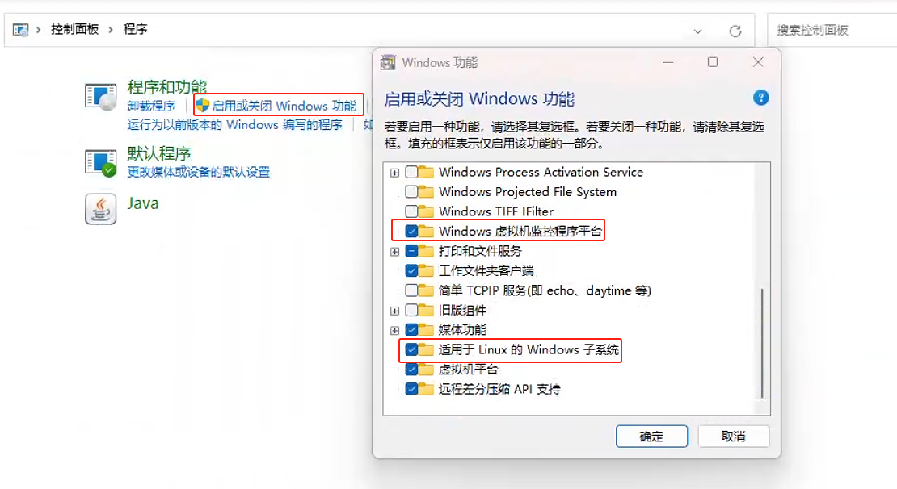
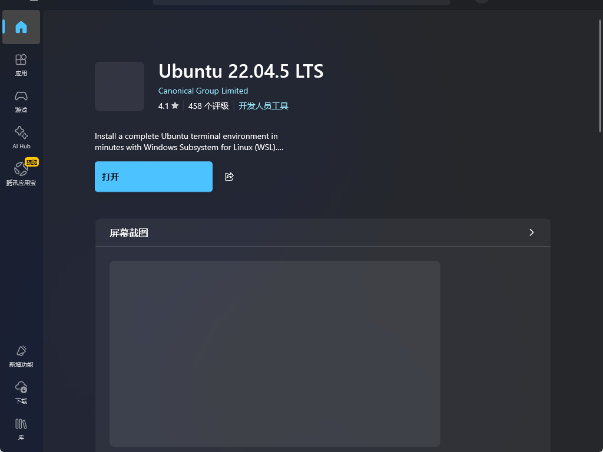
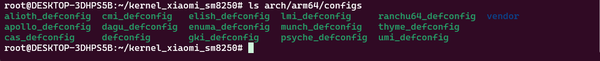
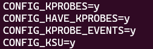

论，如何编译好一个 kernelsu（sukisu）
---------- 以下基于我写的编译脚本和编译环境，具体视你的情况而定 ----------------
（图省事的可以直接照搬我的）
1, wsl ubuntu（Linux）环境的安装

随后，打开powershell/cmd （管理员权限[右键win菜单，找到终端管理员]）
勾选上面的几项，然后重启
执行
wsl --install
wsl --update
wsl -v
不出意外 wsl -v 会生成一下内容
WSL 版本： 2.x.x.x
如果不是2的版本，执行
wsl --set-default-version 2随后可以打开微软商店搜索Ubuntu

安装Ubuntu（我所使用的环境是Ubuntu2204，你可以使用其他的）
2, Ubuntu环境配置
首先换源，这样在apt的时候快一些使用vim编辑/etc/apt/sources.list
随后删除原有内容（vim使用方法自己查查吧） 使用vimtutor可以使用官方的vim教程哦~
添加如下内容（示例使用的是清华源）
# 默认注释了源码镜像以提高 apt update 速度，如有需要可自行取消注释 deb https://mirrors.tuna.tsinghua.edu.cn/ubuntu/ jammy main restricted
universe multiverse # deb-src https://mirrors.tuna.tsinghua.edu.cn/ubuntu/ jammy main restricted universe
multiverse deb https://mirrors.tuna.tsinghua.edu.cn/ubuntu/ jammy-updates main restricted universe multiverse #
deb-src https://mirrors.tuna.tsinghua.edu.cn/ubuntu/ jammy-updates main restricted universe multiverse deb
https://mirrors.tuna.tsinghua.edu.cn/ubuntu/ jammy-backports main restricted universe multiverse # deb-src
https://mirrors.tuna.tsinghua.edu.cn/ubuntu/ jammy-backports main restricted universe multiverse #
以下安全更新软件源包含了官方源与镜像站配置，如有需要可自行修改注释切换 deb http://security.ubuntu.com/ubuntu/ jammy-security main restricted
universe multiverse # deb-src http://security.ubuntu.com/ubuntu/ jammy-security main restricted universe
multiverse # 预发布软件源，不建议启用 # deb https://mirrors.tuna.tsinghua.edu.cn/ubuntu/ jammy-proposed main restricted
universe multiverse # # deb-src https://mirrors.tuna.tsinghua.edu.cn/ubuntu/ jammy-proposed main restricted
universe multiverse
sudo apt update
sudo apt-get install git ccache automake flex lzop bison gperf build-essential zip curl zlib1g-dev g++-multilib libxml2-utils bzip2 libbz2-dev libbz2-1.0 libghc-bzlib-dev squashfs-tools pngcrush schedtool dpkg-dev make optipng maven libssl-dev pwgen libswitch-perl policycoreutils minicom libxml-sax-base-perl libxml-simple-perl bc python2 libc6-dev-i386 libx11-dev lib32z-dev libgl1-mesa-dev xsltproc unzip device-tree-compiler python3 zstd libc6 binutils libc6-dev-i386 gcc g++ p7zip p7zip-full -y
sudo su #（切换到root账户）
cd ~
3, 必要文件的获取
（如设备树等）展示所使用的是小米10s
例如我要将源代码 https://github.com/Flicker-Android-Devices/kernel_xiaomi_sm8250/
复制到本地
那么
git clone https://github.com/Flicker-Android-Devices/kernel_xiaomi_sm8250/随后
执行 ls ，找到你复制的设备树源代码
cd 那个文件夹
在这个目录下执行
curl -LSs "https://raw.bgithub.xyz/SukiSU-Ultra/SukiSU-Ultra/main/kernel/setup.sh" | bash -s nongki
# （第一条是针对非gki内核，就是不达到系统内核版本5的设备和5.4的，比如888一代的）
curl -LSs "https://raw.bgithub.xyz/SukiSU-Ultra/SukiSU-Ultra/main/kernel/setup.sh" | bash -s main
# （gki内核，针对达到5内核的，本篇不涉及）
4,配置与环境
在你的目录下执行 ls arch/arm64/configs
vim arch/arm64/configs/你的设备_defconfig 114514
打开后输入
/CONFIG_KSU
确认，使用n键切换，如果找到的这行配置，并且像下图一样是 y 的状态，就不用管了

反之如果没有，添加这几行代码到末尾
CONFIG_KPROBES=y
CONFIG_HAVE_KPROBES=y
CONFIG_KPROBE_EVENTS=y
在设备树根目录下执行 git clone https://android.googlesource.com/platform/system/libufdt scripts/ufdt/libufdt
（有些机型需要）
现在回到 /root/ 目录，使用 cd ~
打开你的Windows浏览器，下载 编译器环境 https://www.123865.com/s/FVohTd-Fe6jH? 提取码：71xu
（假设你下载的目录在d盘根目录）
cp /mnt/d/tool.zip /root/
unzip tool.zip
等跑完进度条了执行 ls ，查看是否又 tool 文件夹，并 ls /root/tool/
出现如下内容
代表环境配置完成
5,编译脚本
也可以不用，不过方便些 我写了有现成的，你可以直接拿来使用，不过要修改
#!/bin/bash
echo "Ciallo~(∠・ω< )⌒★"
starttime=`date +'%Y-%m-%d %H:%M:%S'`
ARCH="arm64"
CLANG_DIR="/root/tool/clang"
CC="/root/tool/clang/bin/clang"
export PATH="$CLANG_DIR/bin:$PATH"
export LOCALVERSION=
export LOCALVERSION_AUTO=n
OUT_DIR="./out"
CLANG_TRIPLE="aarch64-linux-gnu-"
CROSS_COMPILE="/root/tool/aarch64-linux-android-4.9/bin/aarch64-linux-androidkernel-"
CROSS_COMPILE_ARM32="/root/tool/arm-linux-androideabi-4.9/bin/arm-linux-androidkernel-"
CC_ADDITION_FLAGS="AR=llvm-ar NM=llvm-nm OBJCOPY=llvm-objcopy OBJDUMP=llvm-objdump STRIP=llvm-strip LLVM_IAS=1 LLVM=1 LD=ld.lld"
# 以上所有clang aarch64-linux-android-4.9 arm-linux-androideabi-4.9 这些编译软件需要指向你本地的目录，或者把我发的东西直接解压道 /root/tool 下
THREAD=$(nproc --all)
args="-j$THREAD O=$OUT_DIR ARCH=$ARCH CROSS_COMPILE=$CROSS_COMPILE CROSS_COMPILE_ARM32=$CROSS_COMPILE_ARM32 CC=$CC CLANG_TRIPLE=$CLANG_TRIPLE $CC_ADDITION_FLAGS"
echo "[+]Args: $args"
echo "[+}Generate .config"
make thyme_defconfig $args
# 此处thyme_defconfig需要修改
echo "[+]Begin Build"
make $args
endtime=`date +'%Y-%m-%d %H:%M:%S'`
start_seconds=$(date --date=" $starttime" +%s);
end_seconds=$(date --date="$endtime" +%s);
echo Start: $starttime.
echo End: $endtime.
echo "Build Time: "$((end_seconds-start_seconds))"s."
echo "Ciallo~(∠・ω< )⌒★！"
保存，该文件需要放在你的设备树根目录
（这个编译脚本综合了几个编译脚本，查重率100%，那些脚本在我这里都是莫名其妙跑不起来，因此糅合了一下，补充了那些教程不足的环境啥的，基本上能跑得起来了）
6,编，译！
sh build.sh（编译过程cpu占用会达到100%，这是正常的）
如下代表成功
整个编译过程大约在20分钟左右，等就行了

能找到生成的镜像文件表示成功
7,anykernel3
回到/root/ 目录 cd ~git clone https://github.com/osm0sis/AnyKernel3
cd AnKernel3
vim anykernel.sh
properties() { '
kernel.string=SukisuUltraPixelOS-20250601 by qincndExecution [execution@qincnd.eu.org]
# 这一行 内核名称 by 作者 [邮箱] （邮箱可以不填）
do.devicecheck=1
do.modules=0
do.systemless=1
do.cleanup=1
do.cleanuponabort=0
device.name1=thyme
# 你的设备代号，如果支持多个就填多个
device.name2=
device.name3=
device.name4=
device.name5=
supported.versions=14-15
# 支持的Android版本
supported.patchlevels=
supported.vendorpatchlevels=
'; }
# end properties
这是第一处需要修改的，往下翻找到
# boot shell variables
BLOCK=/dev/block/by-name/boot;
# 设备实际boot所在地
IS_SLOT_DEVICE=1;
# 是否是ab分区，是填写1 ，不是填写0
RAMDISK_COMPRESSION=auto;
# 设置 Ramdisk 压缩格式 不用特别管他，auto自动就行
PATCH_VBMETA_FLAG=1;
# avb验证，1为禁止验证 （启用 AVB 验证禁用补丁），推荐1
（找到类似的替换为这些即可，80%通用）
zip -r 你的压缩包名称.zip /root/AnyKernel3/*
执行 ls ，在当前目录找到你的压缩包
cp 你的压缩包.zip /mnt/d/ 此处是复制道d盘，你可以使用别的方式复制到本地
（假设你要复制到d盘根目录）
随后打开d盘找到你的压缩包，进行刷机吧！测试！